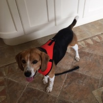
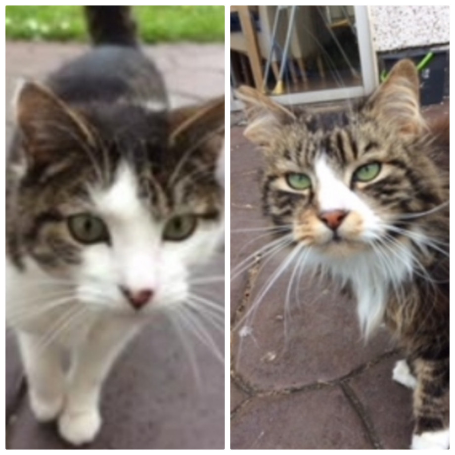
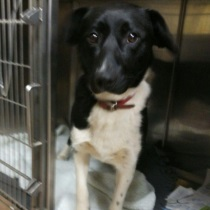

Buddy the Beagle
Buddy is a lovely, friendly, 4 year old neutered male Beagle who is looking for a nice new home. His original owner has emigrated and the lady who is caring for him at present is unable to do so into the future. She tells us that he likes other dogs and loves to go for a walk on the lead.
Clara and Robbie
Clara and Robbie are two gentle, timid, Tabby and Tabby and White cats. They are 6 year old siblings and both neutered.
They have spent all of their lives together, in a loving home. They are in urgent need of a nice new home together after sadly and suddenly losing their owner.
Teddy
Teddy is a friendly, lively, 9 month old, neutered, terrier/collie cross type dog in need of loving home. Contact us urgently for more information.
Contact us urgently for more information. Phone 01 – 8375630 or ncdspca@gmail.com